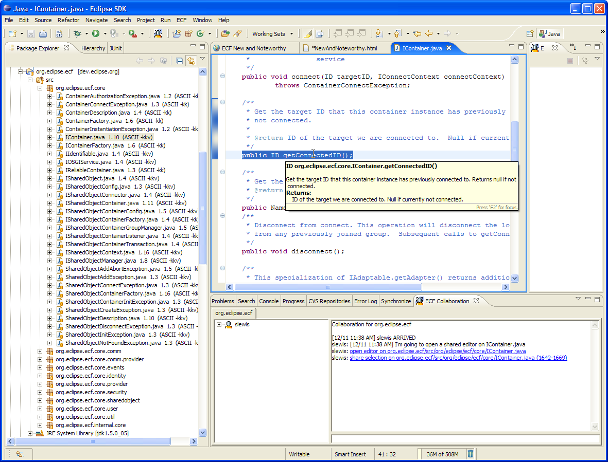
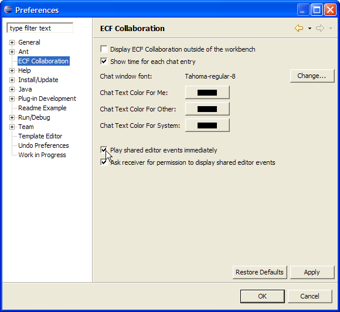
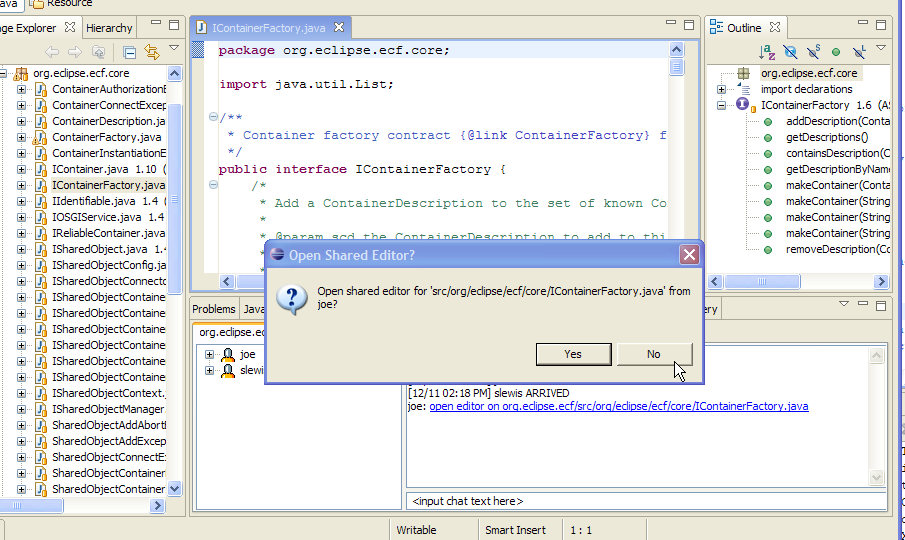

an eclipse technology subproject
New and Noteworthy
0.5.4 Stable Release
Return to ECF download page Return to ECF communication resources page
New and Noteworthy for 0.4.0
New and Noteworthy for 0.5.2

|
eclipse communication framework
an eclipse technology subproject New and Noteworthy 0.5.4 Stable Release Return to ECF download page Return to ECF communication resources page New and Noteworthy for 0.4.0 New and Noteworthy for 0.5.2 |
|
| |
|
ECF Shared Editor Improvements |
|
|
Event History for Open Editor and Share Selection Events |
Shared editor events are now presented in the text chat output.  Clicking on these links later will 'replay' the event, and allow participants to control their own display open editor and share selection events. For a description of how to use the open editor and share selection features see New and noteworthy for 0.5.2. This feature and the other 0.5.4 shared editor features are encapsulated in enhancement request 119206 |
|
Local preferences for receiving open editor and share selection events |
Remote users opening editors on local machines can be disconcerting if prepared for it. So that users can control how open editor and share selection events are handled, preferences have been added for the collaboration example plugin org.eclipse.ecf.example.collab. The first preference is whether or not shared editor events are played immediately.  The 'Play shared editor events immediately' preference, if checked, plays open editor events immediately when they are received. If unchecked, open editor events are rather only placed into the text chat history (see above) and no editor will be launched. The second preference is determines whether the user is asked (via a dialog) whether editor should be opened. This preference is only relevant when the preference described above is checked. If both preferences are checked, the user will be presented with the following when a shared editor event is received  |
| |
|
ECF API Additions and Changes |
|
|
XMPP Provider Implements ISharedObjectContainer |
The XMPP provider now implements ISharedObjectContainer interface via:
ISharedObjectContainer socontainer = (ISharedObjectContainer) xmppcontainer.getAdapter(ISharedObjectContainer.class);
IPresenceContainer for
presence and chat access, and ISharedObjectContainer. The
ISharedObjectContainer implementation allows other applications to be built upon XMPP IM and XMPP multi-user chat protocol. For example,
the org.eclipse.ecf.example.collab application is implemented upon the ISharedObjectContainer API, and soon it will be ported to run
on the XMPP implementation.
|
|
ConnectContextFactory helper class |
The signature for IContainer.connect() requires an IConnectContext instance to provide the authentication context for connecting to a remote container. In general this context varies by the type of provider (i.e. some providers require password for authentication, others require other credentials like certificates, etc). A new helper class ConnectContextFactory is now available to allow the easy creation of typical connect context...e.g. those that are based upon password. So code that used to need to explicitly create an IConnectContext instance:
...
IConnectContext cc = createMyConnectContext(password);
container.connect(targetid, cc);
Can now accomplish the same result more simply by using the ConnectContextFactory
...
container.connect(targetid, ConnectContextFactory.makePasswordConnectContext(password));
...
|